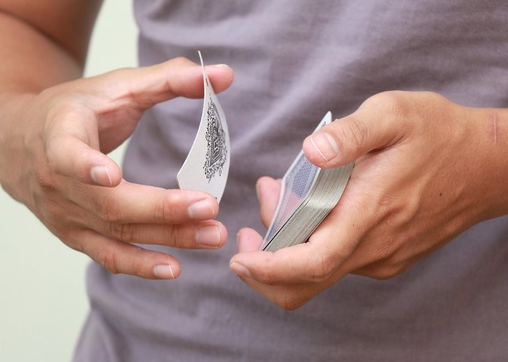

The double lift (also known as the Double Turnover) is an essential move for any serious magician. It is the prime move used in numerous classic card tricks. It's a timeless tool; as fundamental to those just starting out in magic as it is to the seasoned professional.

T H E D O U B L E L I F T

What is the Double Lift?
It is a sleight of hand technique in which the magician lifts two cards at once, but makes it appear as only one card (the top card on the deck). To spectators, it appears that the magician is showing the top card, but it is actually the second card.
Why is it such an important move to master?
The double lift is a skill that every magician practices until they can do it with their eyes closed. It is an incredibly powerful trick that can be used in various magic tricks. In fact, some classic tricks rely solely on the use of double lifts.
Materials needed: A deck of cards
BEGINNER
STEP ONE: Hold the Pack Properly
It is important to hold the cards properly. The key of holding the pack is you want your little finger (a.k.a. pinky finger) on top of the card in a corner, wrapping from the bottom of the deck. This is going to set you up to perform a "pinky break" (refer to step two).
STEP TWO: Perform the Pinky Break
Put your pinky finger underneath the two top cards. To do this, push your thumb outward to the right. This will cause 2 to 3 cards to
be pushed out. Use your pinky finger and tuck it underneath the second top card. Then, square your deck back up. You should hold your deck
regularly, along with your pinky finger being under the cards.
Since you maybe performing in front of an audience, use a mirror to help see it in a audience's perspective. You won't want expose your
pinky break to the audience, and give away your secret!
STEP THREE: Flip the "2 Cards"
With your right finger and thumb, grab the 2 cards that is on top the pinky finger, and flip it over. To do this,
Your index finger should be underneath the card, and your thumb should be at the top.
Lift the card up slightly (about 1/2 an inch), and throw it over.
* "Throw" it as you let go your index finger and thumb when you flip it over. *
As you flip over the card, make sure the card is on the meat side of the thumb.
This allows it to create a "break."
In other words, it allows the cards that you flipped to be separate from the rest of the cards.